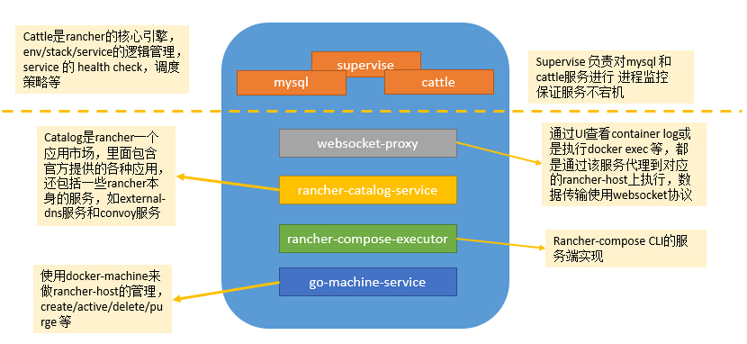
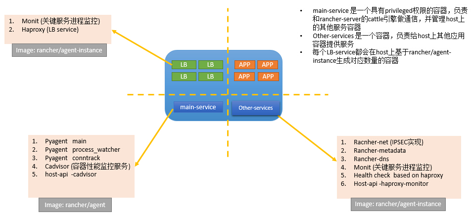
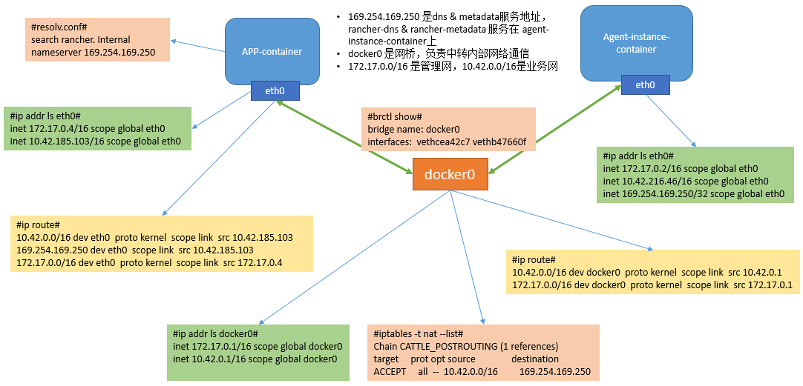
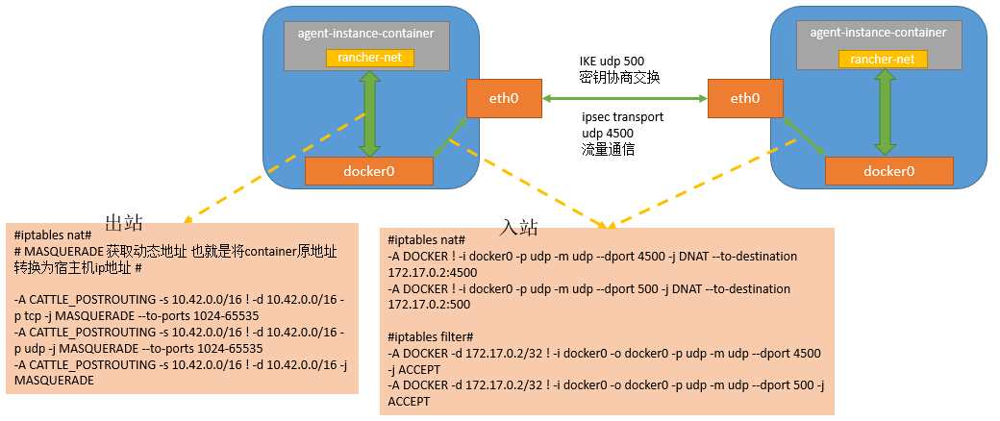
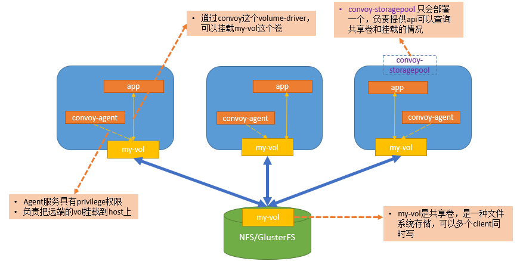

Rancher所有的服务都是运行在container中，这给我们部署Rancher集群提供了非常大的便利， 不会像刚入门OpenStack那样需要手动安装每个组件让人心力憔悴，但是手动部署的确让我们知晓了一些其中内涵。 Rancher给我省去了部署的麻烦，但是作为技术人员我们若要去hold住Rancher，那么我们必须对它的架构了如指掌。
本文初写时Rancher还没有release正式版，所以架构每次小升级可能都会有些许变动， 需要声明，下面内容已跟踪至 Rancher-v0.59.0 版本。
rancher-server是rancher的控制节点，负责管理接入的各个host节点，里面运行着rancher的核心组件cattle， rancher几乎全部的服务都是用golang写的，而只有这个cattle组件是java写的。
关于cattle组件为什么是java写的，这里插播一段小故事，rancher的创始人梁胜博士我们都知道是CloudStack创始人， CloudStack我们都知道是java写的，梁博士早期在Sun工作搞过JVM，用java来做CloudStack也是技术继承顺理成章的事。 在做CloudStack过程中，出现了一个奇人，这哥们就是Darren Shepherd，Darren在另外一家名叫GoDaddy(卖域名那货)的公司工作， 这哥们是重构狂，把CloudStack的核心引擎重写了四五次。后来CloudStack被收购再后来梁博士出来搞Rancher就把Darren一起叫上， Darren在rancher的代码贡献量可以用吨来计算了。所以这个cattle大家如果细心一点，应该能找到CloudStack的影子。
故事插播完毕，相信随着rancher的不断升级优化，cattle肯定会被分拆成各个小组件，然后用golang实现， 我们来用一张图看一下rancher-server都包含了什么:
rancher-server管理的各个host节点，我们在添加它们时候都会在相应的host上启动一个拥有privilege权限的container， 这个container基于rancher/agent镜像，它首先会连接rancher-server验证一个secret & key， 成功后再启动一个rancher/agent container也是privilege级别的，最终这个container负责和rancher-server保持连接，并接收各种操作的event。 如果当前host要使用rancher managed网络，那么还会启动一个基于 rancher/agent-instance 镜像的container。 同样如果添加了lb-service，lb-service也是基于rancher/agent-instance来实现的。我们还是用一张图来有一个整体感官的了解：
值得一提的是rancher-net组件，从 v0.56 开始不用racoon实现ipsec了，改成用rancher-net包装Strongswan， 用charon实现IKE，从rancher-net的package架构看，未来是要实现多种backend，很期待vxlan，vlan的实现， docker-network的接入应该只是时间问题。如果部署在内部环境里，用ipsec做网络隔离还是有点重。
我们运行很多个stack、service之后，host上会有很多container，我们会在rancher-ui上看到container的网络是10.42.0.0/16， host上的container之间的网络是一种怎样的形式呢？分析这个主要还是看container的ip addr & ip route， 以及host的iptables，我们还是一张图来看一下：
rancher-dns & rancher-metadata 是我们需要了解的重点组件，我们使用的service link功能其实就是通过rancher-dns实现的， rancher-metadata与confd结合可以让我们在app-container中动态载入配置， 另外rancher的external-dns也得依赖这个它，这个我会在后续的文章中具体描述。
host的内部网络看过之后，我们来看看container跨主机通信的实现，主要通过两个udp端口500 and 4500， 网络流量出站入站通过host的iptables规则处理，ip地址为172.17.0.2这个container就是运行rancher-net的container:
计算和网络聊完，我们再来看看存储，rancher自己实现了一个docker-volume-driver即convoy，convoy不生产存储， 它只是存储的搬运工，它相当于把各种存储接口做一个统一的抽象，目前支持Device Mapper、GlusterFS/NFS、EBS等， 目前使用上可以参考rancher-catalog中的实现，我们可以在UI上看到Convoy GlusterFS & Convoy NFS， 如果你的环境中已经有NFS和GlusterFS的实现，填写一些相关参数进行部署即可。 它主要做的事就是在每个host上部署convoy-agent服务并把对应的共享卷挂载上来，这样每个app-container就可以用过convoy使用共享卷:
to be continued